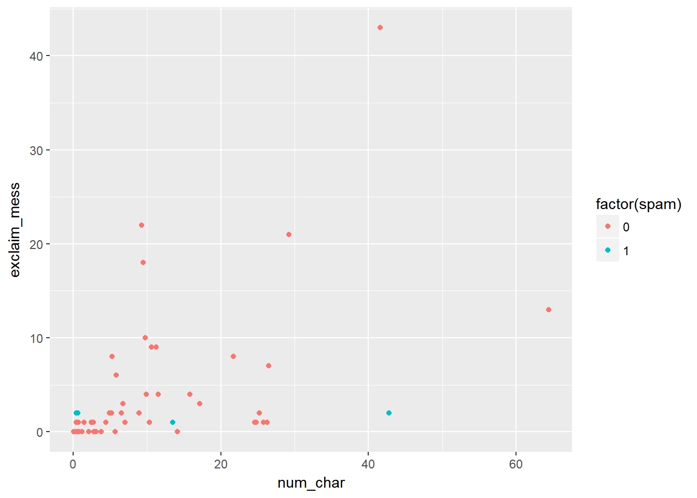

6 Introduction to Data
Notes taken during/inspired by the Datacamp course ‘Introduction to Data’ by Mine Cetinkaya-Rundel. The supporting textbook is Diez, Barr, and Cetinkaya-Rundel (2015).
6.1 Language of Data
The course makes use of the openintro package, accompanying the textbook. Let’s load the package and our first dataset, email50.
# Load packages
library("openintro")
library("dplyr")
# Load data
data(email50)
# View its structure
str(email50)## 'data.frame': 50 obs. of 21 variables:
## $ spam : num 0 0 1 0 0 0 0 0 0 0 ...
## $ to_multiple : num 0 0 0 0 0 0 0 0 0 0 ...
## $ from : num 1 1 1 1 1 1 1 1 1 1 ...
## $ cc : int 0 0 4 0 0 0 0 0 1 0 ...
## $ sent_email : num 1 0 0 0 0 0 0 1 1 0 ...
## $ time : POSIXct, format: "2012-01-04 13:19:16" "2012-02-16 20:10:06" ...
## $ image : num 0 0 0 0 0 0 0 0 0 0 ...
## $ attach : num 0 0 2 0 0 0 0 0 0 0 ...
## $ dollar : num 0 0 0 0 9 0 0 0 0 23 ...
## $ winner : Factor w/ 2 levels "no","yes": 1 1 1 1 1 1 1 1 1 1 ...
## $ inherit : num 0 0 0 0 0 0 0 0 0 0 ...
## $ viagra : num 0 0 0 0 0 0 0 0 0 0 ...
## $ password : num 0 0 0 0 1 0 0 0 0 0 ...
## $ num_char : num 21.705 7.011 0.631 2.454 41.623 ...
## $ line_breaks : int 551 183 28 61 1088 5 17 88 242 578 ...
## $ format : num 1 1 0 0 1 0 0 1 1 1 ...
## $ re_subj : num 1 0 0 0 0 0 0 1 1 0 ...
## $ exclaim_subj: num 0 0 0 0 0 0 0 0 1 0 ...
## $ urgent_subj : num 0 0 0 0 0 0 0 0 0 0 ...
## $ exclaim_mess: num 8 1 2 1 43 0 0 2 22 3 ...
## $ number : Factor w/ 3 levels "none","small",..: 2 3 1 2 2 2 2 2 2 2 ...#glimpse the first few items using dplyr
glimpse(email50)## Observations: 50
## Variables: 21
## $ spam <dbl> 0, 0, 1, 0, 0, 0, 0, 0, 0, 0, 0, 0, 1, 1, 0, 0, 0...
## $ to_multiple <dbl> 0, 0, 0, 0, 0, 0, 0, 0, 0, 0, 0, 0, 0, 1, 0, 0, 0...
## $ from <dbl> 1, 1, 1, 1, 1, 1, 1, 1, 1, 1, 1, 1, 1, 1, 1, 1, 1...
## $ cc <int> 0, 0, 4, 0, 0, 0, 0, 0, 1, 0, 0, 0, 0, 0, 0, 0, 0...
## $ sent_email <dbl> 1, 0, 0, 0, 0, 0, 0, 1, 1, 0, 0, 0, 0, 0, 0, 1, 1...
## $ time <dttm> 2012-01-04 13:19:16, 2012-02-16 20:10:06, 2012-0...
## $ image <dbl> 0, 0, 0, 0, 0, 0, 0, 0, 0, 0, 0, 0, 0, 0, 0, 0, 0...
## $ attach <dbl> 0, 0, 2, 0, 0, 0, 0, 0, 0, 0, 0, 0, 0, 2, 0, 0, 0...
## $ dollar <dbl> 0, 0, 0, 0, 9, 0, 0, 0, 0, 23, 4, 0, 3, 2, 0, 0, ...
## $ winner <fctr> no, no, no, no, no, no, no, no, no, no, no, no, ...
## $ inherit <dbl> 0, 0, 0, 0, 0, 0, 0, 0, 0, 0, 0, 0, 0, 0, 0, 0, 0...
## $ viagra <dbl> 0, 0, 0, 0, 0, 0, 0, 0, 0, 0, 0, 0, 0, 0, 0, 0, 0...
## $ password <dbl> 0, 0, 0, 0, 1, 0, 0, 0, 0, 0, 0, 2, 0, 0, 0, 0, 0...
## $ num_char <dbl> 21.705, 7.011, 0.631, 2.454, 41.623, 0.057, 0.809...
## $ line_breaks <int> 551, 183, 28, 61, 1088, 5, 17, 88, 242, 578, 1167...
## $ format <dbl> 1, 1, 0, 0, 1, 0, 0, 1, 1, 1, 1, 1, 1, 0, 1, 1, 1...
## $ re_subj <dbl> 1, 0, 0, 0, 0, 0, 0, 1, 1, 0, 0, 0, 0, 0, 0, 1, 1...
## $ exclaim_subj <dbl> 0, 0, 0, 0, 0, 0, 0, 0, 1, 0, 0, 0, 0, 0, 0, 0, 0...
## $ urgent_subj <dbl> 0, 0, 0, 0, 0, 0, 0, 0, 0, 0, 0, 0, 0, 0, 0, 0, 0...
## $ exclaim_mess <dbl> 8, 1, 2, 1, 43, 0, 0, 2, 22, 3, 13, 1, 2, 2, 21, ...
## $ number <fctr> small, big, none, small, small, small, small, sm...When using certain functions, such as filters on categorical variables, the way R handles the filtered out variables is to leave the items in as place holders (empty containers), even though the place holder is empty. This can have undesirable effects, particularly if using the filtered object for modelling. We then end up with zero values which are actually filtered out factors.
# Subset of emails with big numbers: email50_big
email50_big <- email50 %>%
filter(number == "big")
# Glimpse the subset
glimpse(email50_big)## Observations: 7
## Variables: 21
## $ spam <dbl> 0, 0, 1, 0, 0, 0, 0
## $ to_multiple <dbl> 0, 0, 0, 0, 0, 0, 0
## $ from <dbl> 1, 1, 1, 1, 1, 1, 1
## $ cc <int> 0, 0, 0, 0, 0, 0, 0
## $ sent_email <dbl> 0, 0, 0, 0, 0, 1, 0
## $ time <dttm> 2012-02-16 20:10:06, 2012-02-04 23:26:09, 2012-0...
## $ image <dbl> 0, 0, 0, 0, 0, 0, 0
## $ attach <dbl> 0, 0, 0, 0, 0, 0, 0
## $ dollar <dbl> 0, 0, 3, 2, 0, 0, 0
## $ winner <fctr> no, no, yes, no, no, no, no
## $ inherit <dbl> 0, 0, 0, 0, 0, 0, 0
## $ viagra <dbl> 0, 0, 0, 0, 0, 0, 0
## $ password <dbl> 0, 2, 0, 0, 0, 0, 8
## $ num_char <dbl> 7.011, 10.368, 42.793, 26.520, 6.563, 11.223, 10.613
## $ line_breaks <int> 183, 198, 712, 692, 140, 512, 225
## $ format <dbl> 1, 1, 1, 1, 1, 1, 1
## $ re_subj <dbl> 0, 0, 0, 0, 0, 0, 0
## $ exclaim_subj <dbl> 0, 0, 0, 1, 0, 0, 0
## $ urgent_subj <dbl> 0, 0, 0, 0, 0, 0, 0
## $ exclaim_mess <dbl> 1, 1, 2, 7, 2, 9, 9
## $ number <fctr> big, big, big, big, big, big, big# Table of number variable - now we have just 7 values
table(email50_big$number)##
## none small big
## 0 0 7# Drop levels
email50_big$number <- droplevels(email50_big$number)
# Another table of number variable
table(email50_big$number)##
## big
## 7In some instance you want to create a discreet function from a numeric value. That is to say we want to create a categorical value based on some groups of numbers. This can be achived as shown below. Note that when calculating a function R will typically either:
- Assign a value e.g. med_num_char <- median(email50$num_char)
- Print a result e.g. median(email50$num_char)
- But we can do both by adding brackets (med_num_char <- median(email50$num_char))
# Calculate median number of characters: med_num_char
(med_num_char <- median(email50$num_char))## [1] 6.8895# Create num_char_cat variable in email50
email50 <- email50 %>%
mutate(num_char_cat = ifelse(num_char < med_num_char, "below median", "at or above median"))
# Count emails in each category
table(email50$num_char_cat)##
## at or above median below median
## 25 25We can also use the mutate function from dplyr to create a new variable from categorical variables
# Create number_yn column in email50
email50 <- email50 %>%
mutate(number_yn, ifelse(number == "none", "no", "yes"))
# Visualize number_yn
ggplot(email50, aes(x = number_yn)) +
geom_bar()We often want to compare two or three variables, which is most easily done using the ggplot package
# Load ggplot2
library(ggplot2)##
## Attaching package: 'ggplot2'## The following object is masked from 'package:openintro':
##
## diamonds# Scatterplot of exclaim_mess vs. num_char
ggplot(email50, aes(x = num_char, y = exclaim_mess, color = factor(spam))) +
geom_point()
6.2 Observational Studies and Experiments
Typically there are two types of study, if we are interested in whether variable Y is caused by some factors (X) we could have two types of studies.
- Observational Study: We are observing, rather than specifically interfere or direct how the data is collected - only correlation can be inferred. In this case, we might survey people and look for patterns in their characteristics (X) and the outcome variable (Y)
- Experimental Study: We randomly assign subjects to various treatments - causation can be inferred. In this case, we would get a group of individuals together then randomly assign them to a group of interest (X), removing the decision from the subjects of the study, we often have a control group also.
Another differentiation to be aware of is between
- Random sampling: We select our subjects at random in order that we can make inferences from our sample, to the wider population
- Random assignment: Subjects are randomly assigned to various treatments and helps us to make causal conclusions
We can therefore combine random sampling with random assignment, to allow causal and generalisable conclusions, however in practice we typically have one or the other - random sampling only (not causal but generalisable), or random assignment (causal but not generalisable) - the negation of both leads to results that are neither causal nor generalisable, but may highlight a need for further research.
Sometimes when there are looking for associations between variables, it is possible to omit variables of interest, which may be confounding variables. For instance, we may have two variables (x) that appear to show a relationship with another (y) but the inclusion of a third variable (x’) causes the apparent relationship to breakdown. If we fail to consider other associated variables, we may fall in to a Simpsons Paradox in which a trend appears in different groups, but disappears when the groups are combined together. Simpsons paradox is a form of Ecological Fallacy. One of the best known examples of Simpsons Paradox comes from admissions data for University of California, Berkeley.
library(tidyr)
data("UCBAdmissions")
ucb_admit <- as.data.frame(UCBAdmissions)
# Restrucutre data - this is to follow the example provided, it takes the aggregated data from the original data frame and disaggregates
# it using indexing by repeating the row indices Freq times for each row - see https://stackoverflow.com/questions/45445919/convert-wide-to-long-with-frequency-column
ucb_admit_disagg = ucb_admit[rep(1:nrow(ucb_admit), ucb_admit$Freq),
-grep("Freq", names(ucb_admit))]
# Count number of male and female applicants admitted
ucb_counts <- ucb_admit_disagg %>%
count(Gender, Admit)
# View result
ucb_counts## # A tibble: 4 x 3
## Gender Admit n
## <fctr> <fctr> <int>
## 1 Male Admitted 1198
## 2 Male Rejected 1493
## 3 Female Admitted 557
## 4 Female Rejected 1278# Spread the output across columns and calculate percentages
ucb_counts %>%
spread(Admit, n) %>%
mutate(Perc_Admit = Admitted / (Admitted + Rejected))## # A tibble: 2 x 4
## Gender Admitted Rejected Perc_Admit
## <fctr> <int> <int> <dbl>
## 1 Male 1198 1493 0.4451877
## 2 Female 557 1278 0.3035422So far, it seems that the results suggest females are less likely to be admitted, but what if we look at the results by department?
# Table of counts of admission status and gender for each department
admit_by_dept <- ucb_admit_disagg %>%
count(Dept, Gender, Admit) %>%
spread(Admit, n)
# View result
admit_by_dept## # A tibble: 12 x 4
## Dept Gender Admitted Rejected
## * <fctr> <fctr> <int> <int>
## 1 A Male 512 313
## 2 A Female 89 19
## 3 B Male 353 207
## 4 B Female 17 8
## 5 C Male 120 205
## 6 C Female 202 391
## 7 D Male 138 279
## 8 D Female 131 244
## 9 E Male 53 138
## 10 E Female 94 299
## 11 F Male 22 351
## 12 F Female 24 317# Percentage of those admitted to each department
admit_by_dept %>%
mutate(Perc_Admit = Admitted / (Admitted + Rejected))## # A tibble: 12 x 5
## Dept Gender Admitted Rejected Perc_Admit
## <fctr> <fctr> <int> <int> <dbl>
## 1 A Male 512 313 0.62060606
## 2 A Female 89 19 0.82407407
## 3 B Male 353 207 0.63035714
## 4 B Female 17 8 0.68000000
## 5 C Male 120 205 0.36923077
## 6 C Female 202 391 0.34064081
## 7 D Male 138 279 0.33093525
## 8 D Female 131 244 0.34933333
## 9 E Male 53 138 0.27748691
## 10 E Female 94 299 0.23918575
## 11 F Male 22 351 0.05898123
## 12 F Female 24 317 0.07038123Now we begin to see that for some departments, there is a higher proportion of females being accpeted than males. Equally for some departments, the rejection rate is very high for both males and females e.g. Dept F. In 4 of the 6 departments, females have a higher proportion of applications being admitted than males. Males tended to apply to less competitive departments than females, the less competitive departments had higher admission rates.
6.3 Sampling strategies and experimental design
We use sampling when we do not want, for whatever reason, to conduct a full Census. A simple random sample is usually the most basic method. We can also use stratified sampling to ensure representation from certain groups. Or we use cluster sampling usually for economic reasons. Or some combination in multistage sampling.
data(county)
# Simple random sample: county_srs
county_srs <- county %>%
sample_n(size = 20)
# Count counties by state
county_srs %>%
group_by(state) %>%
count()## # A tibble: 15 x 2
## # Groups: state [15]
## state n
## <fctr> <int>
## 1 Florida 1
## 2 Georgia 3
## 3 Illinois 1
## 4 Massachusetts 1
## 5 Michigan 1
## 6 Minnesota 1
## 7 Mississippi 1
## 8 Missouri 3
## 9 Nebraska 1
## 10 New Jersey 1
## 11 Ohio 1
## 12 Oklahoma 1
## 13 Texas 2
## 14 West Virginia 1
## 15 Wisconsin 1For a stratified sample we would do something similar.
# Stratified sample
states_str <- us_regions %>%
group_by(region) %>%
sample_n(size = 2)
# Count states by region
states_str %>%
group_by(region) %>%
count()The principles of experimental design include 4 key components:
- Control: compare treatment of interest to a control group
- Randomise: randomly assign subjects to treatments
- Replicate: collect a sufficiently large sample within a study, or replicate the entire study
- Block: account for the potential effect of confounding variables
We group subjects into blocks based on these confounding variables, then randomise within each block to treatment groups. So for instance, if we were testing whether an online or classroom R course was more effective using an experiment, one possible confounding variable would be previous programming experience. Therefore we would seperate out - block - those with and those without previous programming experience, ensuring we have an equal number in each treatment group (online vs classroom) of those with and without previous experience.
In random sampling, you use stratifying to control for a variable. In random assignment, you use blocking to achieve the same goal.
References
Diez, D., C. Barr, and M. Cetinkaya-Rundel. 2015. OpenIntro Statistics. 3rd Edition. www.openintro.org.